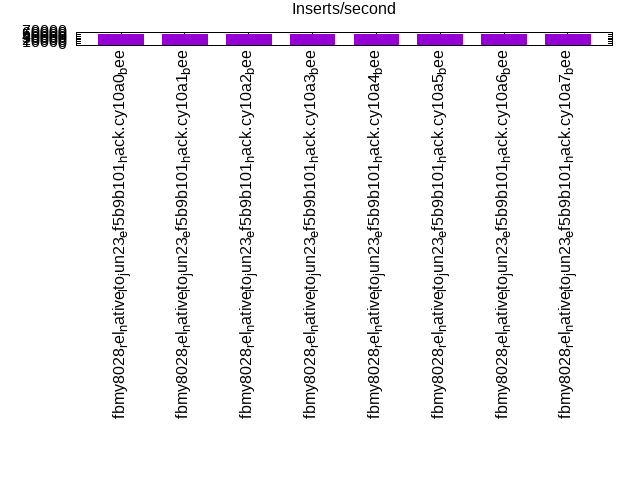
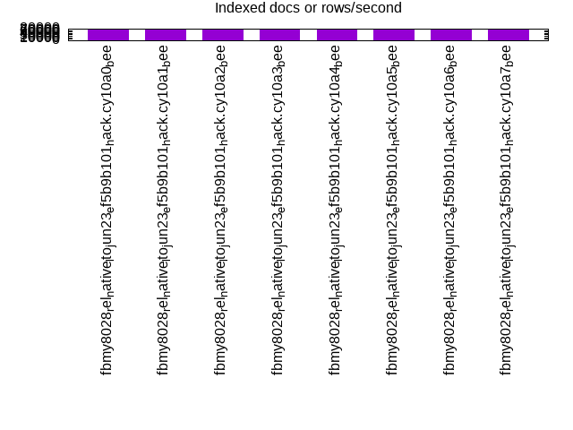
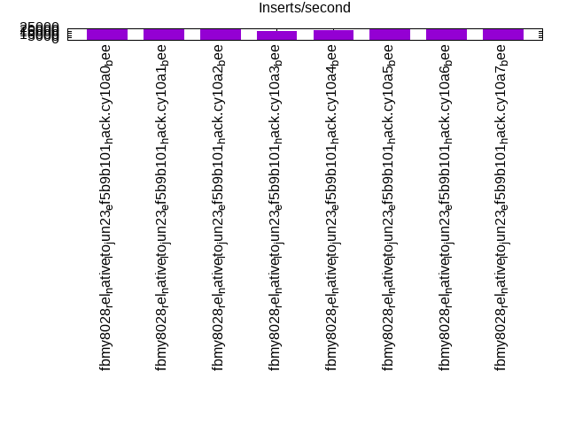
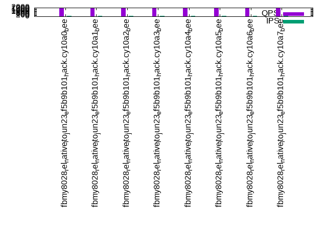
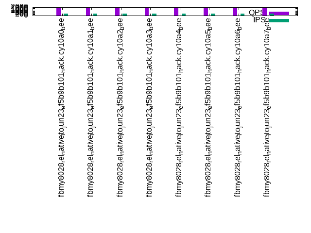
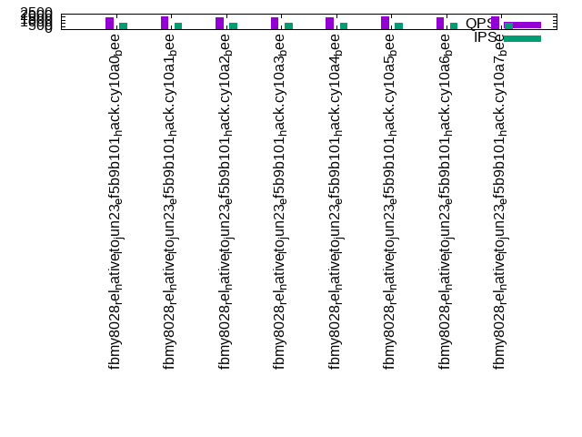

This is a report for the insert benchmark with 800M docs and 1 client(s). It is generated by scripts (bash, awk, sed) and Tufte might not be impressed. An overview of the insert benchmark is here and a short update is here. Below, by DBMS, I mean DBMS+version.config. An example is my8020.c10b40 where my means MySQL, 8020 is version 8.0.20 and c10b40 is the name for the configuration file.
The test server has 8 AMD cores, 16G RAM and an NVMe SSD. It is described here as the Beelink. The benchmark was run with 1 client and there were 1 or 3 connections per client (1 for queries or inserts without rate limits, 1+1 for rate limited inserts+deletes). It uses 1 table. It loads 800M rows per table without secondary indexes, creates secondary indexes, then inserts 100M rows per table with a delete per insert to avoid growing the table. It then does 3 read+write tests for 3600s each that do queries as fast as possible with 100, 500 and then 1000 inserts/second/client concurrent with the queries and 1000 deletes/second to avoid growing the table. The database is larger than memory. Clients and the DBMS share one server. The per-database configs are in the per-database subdirectories here.
The tested DBMS are:
The numbers are inserts/s for l.i0 and l.i1, indexed docs (or rows) /s for l.x and queries/s for q*.2. The values are the average rate over the entire test for inserts (IPS) and queries (QPS). The range of values for IPS and QPS is split into 3 parts: bottom 25%, middle 50%, top 25%. Values in the bottom 25% have a red background, values in the top 25% have a green background and values in the middle have no color. A gray background is used for values that can be ignored because the DBMS did not sustain the target insert rate. Red backgrounds are not used when the minimum value is within 80% of the max value.
| dbms | l.i0 | l.x | l.i1 | q100.1 | q500.1 | q1000.1 |
|---|---|---|---|---|---|---|
| fbmy8028_rel_native_lto_jun23_ef5b9b101_hack.cy10a0_bee | 60855 | 73633 | 23240 | 1900 | 1904 | 1969 |
| fbmy8028_rel_native_lto_jun23_ef5b9b101_hack.cy10a1_bee | 60740 | 73377 | 23073 | 1975 | 1881 | 1993 |
| fbmy8028_rel_native_lto_jun23_ef5b9b101_hack.cy10a2_bee | 61505 | 73216 | 23196 | 1911 | 1944 | 1971 |
| fbmy8028_rel_native_lto_jun23_ef5b9b101_hack.cy10a3_bee | 60767 | 73410 | 19106 | 1958 | 1930 | 1973 |
| fbmy8028_rel_native_lto_jun23_ef5b9b101_hack.cy10a4_bee | 61022 | 73525 | 22022 | 1907 | 1915 | 1936 |
| fbmy8028_rel_native_lto_jun23_ef5b9b101_hack.cy10a5_bee | 60990 | 73525 | 23234 | 1992 | 1937 | 2015 |
| fbmy8028_rel_native_lto_jun23_ef5b9b101_hack.cy10a6_bee | 60883 | 73701 | 23111 | 1988 | 1898 | 1914 |
| fbmy8028_rel_native_lto_jun23_ef5b9b101_hack.cy10a7_bee | 60556 | 73336 | 23375 | 1883 | 1930 | 2044 |
This table has relative throughput, throughput for the DBMS relative to the DBMS in the first line, using the absolute throughput from the previous table. Values less than 0.95 have a yellow background. Values greater than 1.05 have a blue background.
| dbms | l.i0 | l.x | l.i1 | q100.1 | q500.1 | q1000.1 |
|---|---|---|---|---|---|---|
| fbmy8028_rel_native_lto_jun23_ef5b9b101_hack.cy10a0_bee | 1.00 | 1.00 | 1.00 | 1.00 | 1.00 | 1.00 |
| fbmy8028_rel_native_lto_jun23_ef5b9b101_hack.cy10a1_bee | 1.00 | 1.00 | 0.99 | 1.04 | 0.99 | 1.01 |
| fbmy8028_rel_native_lto_jun23_ef5b9b101_hack.cy10a2_bee | 1.01 | 0.99 | 1.00 | 1.01 | 1.02 | 1.00 |
| fbmy8028_rel_native_lto_jun23_ef5b9b101_hack.cy10a3_bee | 1.00 | 1.00 | 0.82 | 1.03 | 1.01 | 1.00 |
| fbmy8028_rel_native_lto_jun23_ef5b9b101_hack.cy10a4_bee | 1.00 | 1.00 | 0.95 | 1.00 | 1.01 | 0.98 |
| fbmy8028_rel_native_lto_jun23_ef5b9b101_hack.cy10a5_bee | 1.00 | 1.00 | 1.00 | 1.05 | 1.02 | 1.02 |
| fbmy8028_rel_native_lto_jun23_ef5b9b101_hack.cy10a6_bee | 1.00 | 1.00 | 0.99 | 1.05 | 1.00 | 0.97 |
| fbmy8028_rel_native_lto_jun23_ef5b9b101_hack.cy10a7_bee | 1.00 | 1.00 | 1.01 | 0.99 | 1.01 | 1.04 |
This lists the average rate of inserts/s for the tests that do inserts concurrent with queries. For such tests the query rate is listed in the table above. The read+write tests are setup so that the insert rate should match the target rate every second. Cells that are not at least 95% of the target have a red background to indicate a failure to satisfy the target.
| dbms | q100.1 | q500.1 | q1000.1 |
|---|---|---|---|
| fbmy8028_rel_native_lto_jun23_ef5b9b101_hack.cy10a0_bee | 100 | 499 | 999 |
| fbmy8028_rel_native_lto_jun23_ef5b9b101_hack.cy10a1_bee | 100 | 499 | 999 |
| fbmy8028_rel_native_lto_jun23_ef5b9b101_hack.cy10a2_bee | 100 | 499 | 998 |
| fbmy8028_rel_native_lto_jun23_ef5b9b101_hack.cy10a3_bee | 100 | 499 | 999 |
| fbmy8028_rel_native_lto_jun23_ef5b9b101_hack.cy10a4_bee | 100 | 499 | 999 |
| fbmy8028_rel_native_lto_jun23_ef5b9b101_hack.cy10a5_bee | 100 | 499 | 999 |
| fbmy8028_rel_native_lto_jun23_ef5b9b101_hack.cy10a6_bee | 100 | 499 | 998 |
| fbmy8028_rel_native_lto_jun23_ef5b9b101_hack.cy10a7_bee | 100 | 499 | 998 |
| target | 100 | 500 | 1000 |
l.i0: load without secondary indexes. Graphs for performance per 1-second interval are here.
Average throughput:
Insert response time histogram: each cell has the percentage of responses that take <= the time in the header and max is the max response time in seconds. For the max column values in the top 25% of the range have a red background and in the bottom 25% of the range have a green background. The red background is not used when the min value is within 80% of the max value.
| dbms | 256us | 1ms | 4ms | 16ms | 64ms | 256ms | 1s | 4s | 16s | gt | max |
|---|---|---|---|---|---|---|---|---|---|---|---|
| fbmy8028_rel_native_lto_jun23_ef5b9b101_hack.cy10a0_bee | 99.733 | 0.191 | 0.073 | 0.003 | 0.102 | ||||||
| fbmy8028_rel_native_lto_jun23_ef5b9b101_hack.cy10a1_bee | 99.733 | 0.191 | 0.073 | 0.003 | 0.112 | ||||||
| fbmy8028_rel_native_lto_jun23_ef5b9b101_hack.cy10a2_bee | 99.735 | 0.190 | 0.072 | 0.003 | 0.116 | ||||||
| fbmy8028_rel_native_lto_jun23_ef5b9b101_hack.cy10a3_bee | 99.733 | 0.192 | 0.072 | 0.003 | 0.117 | ||||||
| fbmy8028_rel_native_lto_jun23_ef5b9b101_hack.cy10a4_bee | 99.734 | 0.191 | 0.072 | 0.003 | 0.149 | ||||||
| fbmy8028_rel_native_lto_jun23_ef5b9b101_hack.cy10a5_bee | 99.733 | 0.191 | 0.072 | 0.003 | 0.111 | ||||||
| fbmy8028_rel_native_lto_jun23_ef5b9b101_hack.cy10a6_bee | 99.733 | 0.191 | 0.073 | 0.003 | 0.102 | ||||||
| fbmy8028_rel_native_lto_jun23_ef5b9b101_hack.cy10a7_bee | 99.732 | 0.192 | 0.073 | 0.003 | 0.117 |
Performance metrics for the DBMS listed above. Some are normalized by throughput, others are not. Legend for results is here.
ips qps rps rmbps wps wmbps rpq rkbpq wpi wkbpi csps cpups cspq cpupq dbgb1 dbgb2 rss maxop p50 p99 tag 60855 0 0 0.0 47.4 14.0 0.000 0.000 0.001 0.236 6406 22.8 0.105 30 25.1 25.9 2.0 0.102 60931 55037 800m.fbmy8028_rel_native_lto_jun23_ef5b9b101_hack.cy10a0_bee 60740 0 0 0.0 47.4 14.0 0.000 0.000 0.001 0.236 6392 23.0 0.105 30 25.1 25.9 2.1 0.112 60831 54973 800m.fbmy8028_rel_native_lto_jun23_ef5b9b101_hack.cy10a1_bee 61505 0 0 0.0 48.0 14.2 0.000 0.000 0.001 0.236 6476 22.7 0.105 30 25.1 25.9 2.0 0.116 61628 55537 800m.fbmy8028_rel_native_lto_jun23_ef5b9b101_hack.cy10a2_bee 60767 0 0 0.0 47.5 14.0 0.000 0.000 0.001 0.236 6394 22.8 0.105 30 25.1 25.9 2.0 0.117 60832 54738 800m.fbmy8028_rel_native_lto_jun23_ef5b9b101_hack.cy10a3_bee 61022 0 0 0.0 47.6 14.1 0.000 0.000 0.001 0.236 6421 22.6 0.105 30 25.1 25.9 2.0 0.149 61131 54748 800m.fbmy8028_rel_native_lto_jun23_ef5b9b101_hack.cy10a4_bee 60990 0 0 0.0 47.6 14.1 0.000 0.000 0.001 0.236 6420 22.7 0.105 30 25.1 25.9 2.0 0.111 61130 54837 800m.fbmy8028_rel_native_lto_jun23_ef5b9b101_hack.cy10a5_bee 60883 0 0 0.0 47.5 14.0 0.000 0.000 0.001 0.236 6404 22.9 0.105 30 25.1 25.9 2.1 0.102 60933 54837 800m.fbmy8028_rel_native_lto_jun23_ef5b9b101_hack.cy10a6_bee 60556 0 0 0.0 47.2 14.0 0.000 0.000 0.001 0.236 6376 22.7 0.105 30 25.1 25.9 2.1 0.117 60633 54437 800m.fbmy8028_rel_native_lto_jun23_ef5b9b101_hack.cy10a7_bee
l.x: create secondary indexes.
Average throughput:
Performance metrics for the DBMS listed above. Some are normalized by throughput, others are not. Legend for results is here.
ips qps rps rmbps wps wmbps rpq rkbpq wpi wkbpi csps cpups cspq cpupq dbgb1 dbgb2 rss maxop p50 p99 tag 73633 0 98 15.4 29.8 10.8 0.001 0.214 0.000 0.150 448 11.7 0.006 13 51.0 51.8 10.4 0.009 NA NA 800m.fbmy8028_rel_native_lto_jun23_ef5b9b101_hack.cy10a0_bee 73377 0 98 15.4 28.9 10.7 0.001 0.214 0.000 0.150 442 11.7 0.006 13 51.0 51.8 9.5 0.009 NA NA 800m.fbmy8028_rel_native_lto_jun23_ef5b9b101_hack.cy10a1_bee 73216 0 97 15.3 29.7 10.7 0.001 0.214 0.000 0.150 458 11.7 0.006 13 51.0 51.8 10.4 0.009 NA NA 800m.fbmy8028_rel_native_lto_jun23_ef5b9b101_hack.cy10a2_bee 73410 0 98 15.4 30.2 10.7 0.001 0.214 0.000 0.149 450 11.7 0.006 13 51.0 51.8 10.4 0.009 NA NA 800m.fbmy8028_rel_native_lto_jun23_ef5b9b101_hack.cy10a3_bee 73525 0 98 15.4 30.1 10.7 0.001 0.214 0.000 0.150 448 11.7 0.006 13 51.0 51.8 10.4 0.009 NA NA 800m.fbmy8028_rel_native_lto_jun23_ef5b9b101_hack.cy10a4_bee 73525 0 98 15.4 30.3 10.7 0.001 0.214 0.000 0.150 448 11.7 0.006 13 51.0 51.8 10.4 0.009 NA NA 800m.fbmy8028_rel_native_lto_jun23_ef5b9b101_hack.cy10a5_bee 73701 0 98 15.4 29.4 10.8 0.001 0.214 0.000 0.150 448 11.7 0.006 13 51.0 51.8 9.4 0.009 NA NA 800m.fbmy8028_rel_native_lto_jun23_ef5b9b101_hack.cy10a6_bee 73336 0 98 15.3 29.6 10.7 0.001 0.214 0.000 0.149 441 11.7 0.006 13 50.9 51.8 9.5 0.009 NA NA 800m.fbmy8028_rel_native_lto_jun23_ef5b9b101_hack.cy10a7_bee
l.i1: continue load after secondary indexes created. Graphs for performance per 1-second interval are here.
Average throughput:
Insert response time histogram: each cell has the percentage of responses that take <= the time in the header and max is the max response time in seconds. For the max column values in the top 25% of the range have a red background and in the bottom 25% of the range have a green background. The red background is not used when the min value is within 80% of the max value.
| dbms | 256us | 1ms | 4ms | 16ms | 64ms | 256ms | 1s | 4s | 16s | gt | max |
|---|---|---|---|---|---|---|---|---|---|---|---|
| fbmy8028_rel_native_lto_jun23_ef5b9b101_hack.cy10a0_bee | 99.650 | 0.343 | 0.004 | 0.003 | 0.107 | ||||||
| fbmy8028_rel_native_lto_jun23_ef5b9b101_hack.cy10a1_bee | 99.658 | 0.336 | 0.004 | 0.003 | 0.140 | ||||||
| fbmy8028_rel_native_lto_jun23_ef5b9b101_hack.cy10a2_bee | 99.649 | 0.343 | 0.004 | 0.003 | 0.126 | ||||||
| fbmy8028_rel_native_lto_jun23_ef5b9b101_hack.cy10a3_bee | 94.089 | 5.826 | 0.083 | 0.003 | 0.151 | ||||||
| fbmy8028_rel_native_lto_jun23_ef5b9b101_hack.cy10a4_bee | 97.049 | 2.942 | 0.007 | 0.003 | 0.171 | ||||||
| fbmy8028_rel_native_lto_jun23_ef5b9b101_hack.cy10a5_bee | 99.654 | 0.337 | 0.006 | 0.003 | 0.150 | ||||||
| fbmy8028_rel_native_lto_jun23_ef5b9b101_hack.cy10a6_bee | 99.660 | 0.333 | 0.004 | 0.003 | 0.131 | ||||||
| fbmy8028_rel_native_lto_jun23_ef5b9b101_hack.cy10a7_bee | 99.662 | 0.330 | 0.006 | 0.003 | 0.155 |
Delete response time histogram: each cell has the percentage of responses that take <= the time in the header and max is the max response time in seconds. For the max column values in the top 25% of the range have a red background and in the bottom 25% of the range have a green background. The red background is not used when the min value is within 80% of the max value.
| dbms | 256us | 1ms | 4ms | 16ms | 64ms | 256ms | 1s | 4s | 16s | gt | max |
|---|---|---|---|---|---|---|---|---|---|---|---|
| fbmy8028_rel_native_lto_jun23_ef5b9b101_hack.cy10a0_bee | 99.634 | 0.356 | 0.008 | 0.002 | 0.107 | ||||||
| fbmy8028_rel_native_lto_jun23_ef5b9b101_hack.cy10a1_bee | 99.614 | 0.375 | 0.008 | 0.003 | 0.149 | ||||||
| fbmy8028_rel_native_lto_jun23_ef5b9b101_hack.cy10a2_bee | 99.606 | 0.382 | 0.009 | 0.003 | 0.145 | ||||||
| fbmy8028_rel_native_lto_jun23_ef5b9b101_hack.cy10a3_bee | 93.980 | 5.933 | 0.084 | 0.003 | 0.169 | ||||||
| fbmy8028_rel_native_lto_jun23_ef5b9b101_hack.cy10a4_bee | 96.427 | 3.559 | 0.011 | 0.003 | 0.150 | ||||||
| fbmy8028_rel_native_lto_jun23_ef5b9b101_hack.cy10a5_bee | 99.598 | 0.387 | 0.012 | 0.003 | 0.169 | ||||||
| fbmy8028_rel_native_lto_jun23_ef5b9b101_hack.cy10a6_bee | 99.601 | 0.387 | 0.009 | 0.003 | 0.126 | ||||||
| fbmy8028_rel_native_lto_jun23_ef5b9b101_hack.cy10a7_bee | 99.608 | 0.379 | 0.010 | 0.003 | 0.173 |
Performance metrics for the DBMS listed above. Some are normalized by throughput, others are not. Legend for results is here.
ips qps rps rmbps wps wmbps rpq rkbpq wpi wkbpi csps cpups cspq cpupq dbgb1 dbgb2 rss maxop p50 p99 tag 23240 0 344 24.5 151.5 55.1 0.015 1.081 0.007 2.429 10643 51.5 0.458 177 57.0 57.2 8.6 0.107 23224 20178 800m.fbmy8028_rel_native_lto_jun23_ef5b9b101_hack.cy10a0_bee 23073 0 265 15.0 148.0 55.3 0.011 0.665 0.006 2.453 10536 51.6 0.457 179 57.4 57.6 6.6 0.140 22974 19937 800m.fbmy8028_rel_native_lto_jun23_ef5b9b101_hack.cy10a1_bee 23196 0 346 25.0 150.3 55.4 0.015 1.103 0.006 2.445 10679 51.7 0.460 178 57.0 57.2 8.7 0.126 23174 20078 800m.fbmy8028_rel_native_lto_jun23_ef5b9b101_hack.cy10a2_bee 19106 0 348 28.1 140.0 51.4 0.018 1.505 0.007 2.755 9394 47.1 0.492 197 59.9 60.1 8.6 0.151 21326 3447 800m.fbmy8028_rel_native_lto_jun23_ef5b9b101_hack.cy10a3_bee 22022 0 302 20.4 152.0 55.5 0.014 0.951 0.007 2.582 10292 51.0 0.467 185 57.0 57.2 8.7 0.171 23124 6992 800m.fbmy8028_rel_native_lto_jun23_ef5b9b101_hack.cy10a4_bee 23234 0 343 24.5 150.8 55.4 0.015 1.080 0.006 2.440 10706 51.6 0.461 178 56.5 56.7 8.6 0.150 23223 20132 800m.fbmy8028_rel_native_lto_jun23_ef5b9b101_hack.cy10a5_bee 23111 0 270 15.7 146.8 54.6 0.012 0.696 0.006 2.421 10571 51.3 0.457 178 57.5 57.7 6.8 0.131 22975 19678 800m.fbmy8028_rel_native_lto_jun23_ef5b9b101_hack.cy10a6_bee 23375 0 272 15.5 148.5 55.4 0.012 0.678 0.006 2.426 10686 51.7 0.457 177 57.8 58.0 6.6 0.155 23373 20127 800m.fbmy8028_rel_native_lto_jun23_ef5b9b101_hack.cy10a7_bee
q100.1: range queries with 100 insert/s per client. Graphs for performance per 1-second interval are here.
Average throughput:
Query response time histogram: each cell has the percentage of responses that take <= the time in the header and max is the max response time in seconds. For max values in the top 25% of the range have a red background and in the bottom 25% of the range have a green background. The red background is not used when the min value is within 80% of the max value.
| dbms | 256us | 1ms | 4ms | 16ms | 64ms | 256ms | 1s | 4s | 16s | gt | max |
|---|---|---|---|---|---|---|---|---|---|---|---|
| fbmy8028_rel_native_lto_jun23_ef5b9b101_hack.cy10a0_bee | 0.382 | 94.216 | 5.394 | 0.009 | nonzero | 0.047 | |||||
| fbmy8028_rel_native_lto_jun23_ef5b9b101_hack.cy10a1_bee | 1.720 | 93.467 | 4.792 | 0.021 | nonzero | 0.040 | |||||
| fbmy8028_rel_native_lto_jun23_ef5b9b101_hack.cy10a2_bee | 1.438 | 93.123 | 5.425 | 0.013 | nonzero | 0.040 | |||||
| fbmy8028_rel_native_lto_jun23_ef5b9b101_hack.cy10a3_bee | 1.136 | 94.149 | 4.700 | 0.014 | 0.001 | 0.062 | |||||
| fbmy8028_rel_native_lto_jun23_ef5b9b101_hack.cy10a4_bee | 0.659 | 94.999 | 4.329 | 0.013 | nonzero | 0.045 | |||||
| fbmy8028_rel_native_lto_jun23_ef5b9b101_hack.cy10a5_bee | 1.204 | 94.533 | 4.258 | 0.005 | nonzero | 0.037 | |||||
| fbmy8028_rel_native_lto_jun23_ef5b9b101_hack.cy10a6_bee | 1.352 | 94.714 | 3.910 | 0.024 | nonzero | 0.046 | |||||
| fbmy8028_rel_native_lto_jun23_ef5b9b101_hack.cy10a7_bee | 1.572 | 91.810 | 6.590 | 0.027 | nonzero | 0.039 |
Insert response time histogram: each cell has the percentage of responses that take <= the time in the header and max is the max response time in seconds. For max values in the top 25% of the range have a red background and in the bottom 25% of the range have a green background. The red background is not used when the min value is within 80% of the max value.
| dbms | 256us | 1ms | 4ms | 16ms | 64ms | 256ms | 1s | 4s | 16s | gt | max |
|---|---|---|---|---|---|---|---|---|---|---|---|
| fbmy8028_rel_native_lto_jun23_ef5b9b101_hack.cy10a0_bee | 99.333 | 0.625 | 0.042 | 0.017 | |||||||
| fbmy8028_rel_native_lto_jun23_ef5b9b101_hack.cy10a1_bee | 99.375 | 0.583 | 0.042 | 0.019 | |||||||
| fbmy8028_rel_native_lto_jun23_ef5b9b101_hack.cy10a2_bee | 99.542 | 0.444 | 0.014 | 0.018 | |||||||
| fbmy8028_rel_native_lto_jun23_ef5b9b101_hack.cy10a3_bee | 99.569 | 0.431 | 0.015 | ||||||||
| fbmy8028_rel_native_lto_jun23_ef5b9b101_hack.cy10a4_bee | 99.319 | 0.611 | 0.069 | 0.019 | |||||||
| fbmy8028_rel_native_lto_jun23_ef5b9b101_hack.cy10a5_bee | 99.444 | 0.556 | 0.014 | ||||||||
| fbmy8028_rel_native_lto_jun23_ef5b9b101_hack.cy10a6_bee | 99.417 | 0.542 | 0.042 | 0.022 | |||||||
| fbmy8028_rel_native_lto_jun23_ef5b9b101_hack.cy10a7_bee | 99.250 | 0.722 | 0.028 | 0.018 |
Delete response time histogram: each cell has the percentage of responses that take <= the time in the header and max is the max response time in seconds. For max values in the top 25% of the range have a red background and in the bottom 25% of the range have a green background. The red background is not used when the min value is within 80% of the max value.
| dbms | 256us | 1ms | 4ms | 16ms | 64ms | 256ms | 1s | 4s | 16s | gt | max |
|---|---|---|---|---|---|---|---|---|---|---|---|
| fbmy8028_rel_native_lto_jun23_ef5b9b101_hack.cy10a0_bee | 99.139 | 0.833 | 0.028 | 0.052 | |||||||
| fbmy8028_rel_native_lto_jun23_ef5b9b101_hack.cy10a1_bee | 82.667 | 17.069 | 0.264 | 0.022 | |||||||
| fbmy8028_rel_native_lto_jun23_ef5b9b101_hack.cy10a2_bee | 84.097 | 15.611 | 0.292 | 0.027 | |||||||
| fbmy8028_rel_native_lto_jun23_ef5b9b101_hack.cy10a3_bee | 86.972 | 12.875 | 0.153 | 0.020 | |||||||
| fbmy8028_rel_native_lto_jun23_ef5b9b101_hack.cy10a4_bee | 84.236 | 15.542 | 0.222 | 0.022 | |||||||
| fbmy8028_rel_native_lto_jun23_ef5b9b101_hack.cy10a5_bee | 96.833 | 3.111 | 0.056 | 0.020 | |||||||
| fbmy8028_rel_native_lto_jun23_ef5b9b101_hack.cy10a6_bee | 81.903 | 17.681 | 0.417 | 0.027 | |||||||
| fbmy8028_rel_native_lto_jun23_ef5b9b101_hack.cy10a7_bee | 92.972 | 6.931 | 0.097 | 0.023 |
Performance metrics for the DBMS listed above. Some are normalized by throughput, others are not. Legend for results is here.
ips qps rps rmbps wps wmbps rpq rkbpq wpi wkbpi csps cpups cspq cpupq dbgb1 dbgb2 rss maxop p50 p99 tag 100 1900 266 4.2 8.2 1.9 0.140 2.254 0.082 18.998 7995 13.4 4.207 564 55.8 56.1 9.6 0.047 1918 1247 800m.fbmy8028_rel_native_lto_jun23_ef5b9b101_hack.cy10a0_bee 100 1975 203 2.9 8.5 2.0 0.103 1.527 0.085 20.216 8226 13.5 4.164 547 55.6 55.9 7.5 0.040 1982 1326 800m.fbmy8028_rel_native_lto_jun23_ef5b9b101_hack.cy10a1_bee 100 1911 266 3.9 8.2 1.9 0.139 2.093 0.082 19.016 8063 13.4 4.220 561 55.6 55.9 9.5 0.040 1886 1215 800m.fbmy8028_rel_native_lto_jun23_ef5b9b101_hack.cy10a2_bee 100 1958 268 4.5 9.6 2.4 0.137 2.341 0.096 24.591 8253 13.7 4.216 560 55.6 55.9 9.3 0.062 1966 1103 800m.fbmy8028_rel_native_lto_jun23_ef5b9b101_hack.cy10a3_bee 100 1907 219 2.9 6.0 1.0 0.115 1.558 0.060 10.708 7951 13.0 4.170 545 55.6 55.9 9.9 0.045 1869 1263 800m.fbmy8028_rel_native_lto_jun23_ef5b9b101_hack.cy10a4_bee 100 1992 296 4.5 8.8 2.0 0.149 2.339 0.088 20.856 8363 13.6 4.199 546 55.7 56.0 9.7 0.037 2014 1263 800m.fbmy8028_rel_native_lto_jun23_ef5b9b101_hack.cy10a5_bee 100 1988 200 2.9 8.1 1.9 0.101 1.500 0.081 19.254 8278 13.5 4.165 543 55.7 56.0 7.1 0.046 1998 1263 800m.fbmy8028_rel_native_lto_jun23_ef5b9b101_hack.cy10a6_bee 100 1883 249 3.8 8.7 2.0 0.132 2.050 0.087 20.848 7930 13.5 4.211 573 55.6 55.9 7.7 0.039 1853 1279 800m.fbmy8028_rel_native_lto_jun23_ef5b9b101_hack.cy10a7_bee
q500.1: range queries with 500 insert/s per client. Graphs for performance per 1-second interval are here.
Average throughput:
Query response time histogram: each cell has the percentage of responses that take <= the time in the header and max is the max response time in seconds. For max values in the top 25% of the range have a red background and in the bottom 25% of the range have a green background. The red background is not used when the min value is within 80% of the max value.
| dbms | 256us | 1ms | 4ms | 16ms | 64ms | 256ms | 1s | 4s | 16s | gt | max |
|---|---|---|---|---|---|---|---|---|---|---|---|
| fbmy8028_rel_native_lto_jun23_ef5b9b101_hack.cy10a0_bee | 0.365 | 94.265 | 5.352 | 0.018 | nonzero | 0.026 | |||||
| fbmy8028_rel_native_lto_jun23_ef5b9b101_hack.cy10a1_bee | 0.544 | 93.116 | 6.292 | 0.047 | nonzero | 0.037 | |||||
| fbmy8028_rel_native_lto_jun23_ef5b9b101_hack.cy10a2_bee | 0.834 | 94.464 | 4.677 | 0.025 | nonzero | 0.052 | |||||
| fbmy8028_rel_native_lto_jun23_ef5b9b101_hack.cy10a3_bee | 0.410 | 94.813 | 4.755 | 0.023 | nonzero | 0.017 | |||||
| fbmy8028_rel_native_lto_jun23_ef5b9b101_hack.cy10a4_bee | 0.193 | 95.883 | 3.905 | 0.019 | nonzero | 0.026 | |||||
| fbmy8028_rel_native_lto_jun23_ef5b9b101_hack.cy10a5_bee | 0.481 | 94.555 | 4.949 | 0.014 | nonzero | 0.019 | |||||
| fbmy8028_rel_native_lto_jun23_ef5b9b101_hack.cy10a6_bee | 0.734 | 93.989 | 5.248 | 0.028 | 0.011 | ||||||
| fbmy8028_rel_native_lto_jun23_ef5b9b101_hack.cy10a7_bee | 1.455 | 93.089 | 5.414 | 0.042 | nonzero | 0.018 |
Insert response time histogram: each cell has the percentage of responses that take <= the time in the header and max is the max response time in seconds. For max values in the top 25% of the range have a red background and in the bottom 25% of the range have a green background. The red background is not used when the min value is within 80% of the max value.
| dbms | 256us | 1ms | 4ms | 16ms | 64ms | 256ms | 1s | 4s | 16s | gt | max |
|---|---|---|---|---|---|---|---|---|---|---|---|
| fbmy8028_rel_native_lto_jun23_ef5b9b101_hack.cy10a0_bee | 99.567 | 0.425 | 0.006 | 0.003 | 0.066 | ||||||
| fbmy8028_rel_native_lto_jun23_ef5b9b101_hack.cy10a1_bee | 99.528 | 0.456 | 0.017 | 0.040 | |||||||
| fbmy8028_rel_native_lto_jun23_ef5b9b101_hack.cy10a2_bee | 99.575 | 0.408 | 0.017 | 0.062 | |||||||
| fbmy8028_rel_native_lto_jun23_ef5b9b101_hack.cy10a3_bee | 99.589 | 0.397 | 0.011 | 0.003 | 0.087 | ||||||
| fbmy8028_rel_native_lto_jun23_ef5b9b101_hack.cy10a4_bee | 99.531 | 0.464 | 0.006 | 0.041 | |||||||
| fbmy8028_rel_native_lto_jun23_ef5b9b101_hack.cy10a5_bee | 99.589 | 0.394 | 0.017 | 0.050 | |||||||
| fbmy8028_rel_native_lto_jun23_ef5b9b101_hack.cy10a6_bee | 99.519 | 0.461 | 0.019 | 0.039 | |||||||
| fbmy8028_rel_native_lto_jun23_ef5b9b101_hack.cy10a7_bee | 99.533 | 0.458 | 0.008 | 0.041 |
Delete response time histogram: each cell has the percentage of responses that take <= the time in the header and max is the max response time in seconds. For max values in the top 25% of the range have a red background and in the bottom 25% of the range have a green background. The red background is not used when the min value is within 80% of the max value.
| dbms | 256us | 1ms | 4ms | 16ms | 64ms | 256ms | 1s | 4s | 16s | gt | max |
|---|---|---|---|---|---|---|---|---|---|---|---|
| fbmy8028_rel_native_lto_jun23_ef5b9b101_hack.cy10a0_bee | 98.147 | 1.828 | 0.022 | 0.003 | 0.080 | ||||||
| fbmy8028_rel_native_lto_jun23_ef5b9b101_hack.cy10a1_bee | 95.656 | 4.278 | 0.067 | 0.054 | |||||||
| fbmy8028_rel_native_lto_jun23_ef5b9b101_hack.cy10a2_bee | 95.950 | 3.953 | 0.097 | 0.047 | |||||||
| fbmy8028_rel_native_lto_jun23_ef5b9b101_hack.cy10a3_bee | 95.922 | 4.014 | 0.061 | 0.003 | 0.072 | ||||||
| fbmy8028_rel_native_lto_jun23_ef5b9b101_hack.cy10a4_bee | 96.342 | 3.614 | 0.044 | 0.057 | |||||||
| fbmy8028_rel_native_lto_jun23_ef5b9b101_hack.cy10a5_bee | 97.681 | 2.283 | 0.036 | 0.063 | |||||||
| fbmy8028_rel_native_lto_jun23_ef5b9b101_hack.cy10a6_bee | 95.981 | 3.936 | 0.083 | 0.053 | |||||||
| fbmy8028_rel_native_lto_jun23_ef5b9b101_hack.cy10a7_bee | 98.461 | 1.506 | 0.033 | 0.056 |
Performance metrics for the DBMS listed above. Some are normalized by throughput, others are not. Legend for results is here.
ips qps rps rmbps wps wmbps rpq rkbpq wpi wkbpi csps cpups cspq cpupq dbgb1 dbgb2 rss maxop p50 p99 tag 499 1904 45 1.2 7.3 1.6 0.024 0.646 0.015 3.193 7720 13.9 4.055 584 55.7 56.4 9.1 0.026 1886 1582 800m.fbmy8028_rel_native_lto_jun23_ef5b9b101_hack.cy10a0_bee 499 1881 14 0.3 6.0 1.0 0.007 0.182 0.012 2.131 7626 13.6 4.054 578 55.7 56.4 7.1 0.037 1790 1646 800m.fbmy8028_rel_native_lto_jun23_ef5b9b101_hack.cy10a1_bee 499 1944 32 0.7 7.0 1.4 0.017 0.368 0.014 2.912 7877 13.8 4.052 568 55.7 56.4 9.0 0.052 1901 1646 800m.fbmy8028_rel_native_lto_jun23_ef5b9b101_hack.cy10a2_bee 499 1930 27 0.5 5.7 1.0 0.014 0.282 0.011 1.967 7807 13.6 4.046 564 55.8 56.4 9.2 0.017 1886 1630 800m.fbmy8028_rel_native_lto_jun23_ef5b9b101_hack.cy10a3_bee 499 1915 32 0.8 7.0 1.5 0.017 0.454 0.014 3.055 7762 13.9 4.052 581 55.7 56.3 9.1 0.026 1854 1630 800m.fbmy8028_rel_native_lto_jun23_ef5b9b101_hack.cy10a4_bee 499 1937 41 0.8 6.4 1.2 0.021 0.428 0.013 2.553 7841 13.7 4.047 566 55.7 56.4 9.2 0.019 1902 1614 800m.fbmy8028_rel_native_lto_jun23_ef5b9b101_hack.cy10a5_bee 499 1898 25 0.7 7.6 1.6 0.013 0.367 0.015 3.370 7697 14.0 4.057 590 55.6 56.3 7.0 0.011 1822 1694 800m.fbmy8028_rel_native_lto_jun23_ef5b9b101_hack.cy10a6_bee 499 1930 55 0.9 7.3 1.5 0.028 0.470 0.015 3.092 7866 13.9 4.077 576 55.7 56.4 7.0 0.018 1902 1614 800m.fbmy8028_rel_native_lto_jun23_ef5b9b101_hack.cy10a7_bee
q1000.1: range queries with 1000 insert/s per client. Graphs for performance per 1-second interval are here.
Average throughput:
Query response time histogram: each cell has the percentage of responses that take <= the time in the header and max is the max response time in seconds. For max values in the top 25% of the range have a red background and in the bottom 25% of the range have a green background. The red background is not used when the min value is within 80% of the max value.
| dbms | 256us | 1ms | 4ms | 16ms | 64ms | 256ms | 1s | 4s | 16s | gt | max |
|---|---|---|---|---|---|---|---|---|---|---|---|
| fbmy8028_rel_native_lto_jun23_ef5b9b101_hack.cy10a0_bee | 0.429 | 95.440 | 4.123 | 0.008 | nonzero | 0.037 | |||||
| fbmy8028_rel_native_lto_jun23_ef5b9b101_hack.cy10a1_bee | 1.029 | 94.752 | 4.193 | 0.025 | nonzero | 0.052 | |||||
| fbmy8028_rel_native_lto_jun23_ef5b9b101_hack.cy10a2_bee | 0.425 | 95.937 | 3.621 | 0.017 | nonzero | 0.021 | |||||
| fbmy8028_rel_native_lto_jun23_ef5b9b101_hack.cy10a3_bee | 0.342 | 95.983 | 3.665 | 0.010 | nonzero | 0.038 | |||||
| fbmy8028_rel_native_lto_jun23_ef5b9b101_hack.cy10a4_bee | 0.176 | 97.046 | 2.758 | 0.020 | nonzero | 0.020 | |||||
| fbmy8028_rel_native_lto_jun23_ef5b9b101_hack.cy10a5_bee | 0.880 | 95.551 | 3.559 | 0.011 | nonzero | 0.059 | |||||
| fbmy8028_rel_native_lto_jun23_ef5b9b101_hack.cy10a6_bee | 0.694 | 95.178 | 4.069 | 0.059 | 0.011 | ||||||
| fbmy8028_rel_native_lto_jun23_ef5b9b101_hack.cy10a7_bee | 1.902 | 94.776 | 3.312 | 0.010 | nonzero | 0.038 |
Insert response time histogram: each cell has the percentage of responses that take <= the time in the header and max is the max response time in seconds. For max values in the top 25% of the range have a red background and in the bottom 25% of the range have a green background. The red background is not used when the min value is within 80% of the max value.
| dbms | 256us | 1ms | 4ms | 16ms | 64ms | 256ms | 1s | 4s | 16s | gt | max |
|---|---|---|---|---|---|---|---|---|---|---|---|
| fbmy8028_rel_native_lto_jun23_ef5b9b101_hack.cy10a0_bee | 99.572 | 0.422 | 0.003 | 0.003 | 0.074 | ||||||
| fbmy8028_rel_native_lto_jun23_ef5b9b101_hack.cy10a1_bee | 99.612 | 0.382 | 0.006 | 0.054 | |||||||
| fbmy8028_rel_native_lto_jun23_ef5b9b101_hack.cy10a2_bee | 99.594 | 0.403 | 0.003 | 0.057 | |||||||
| fbmy8028_rel_native_lto_jun23_ef5b9b101_hack.cy10a3_bee | 99.658 | 0.338 | 0.003 | 0.001 | 0.071 | ||||||
| fbmy8028_rel_native_lto_jun23_ef5b9b101_hack.cy10a4_bee | 99.653 | 0.344 | 0.001 | 0.001 | 0.067 | ||||||
| fbmy8028_rel_native_lto_jun23_ef5b9b101_hack.cy10a5_bee | 99.569 | 0.425 | 0.004 | 0.001 | 0.068 | ||||||
| fbmy8028_rel_native_lto_jun23_ef5b9b101_hack.cy10a6_bee | 99.664 | 0.331 | 0.004 | 0.001 | 0.067 | ||||||
| fbmy8028_rel_native_lto_jun23_ef5b9b101_hack.cy10a7_bee | 99.662 | 0.335 | 0.003 | 0.056 |
Delete response time histogram: each cell has the percentage of responses that take <= the time in the header and max is the max response time in seconds. For max values in the top 25% of the range have a red background and in the bottom 25% of the range have a green background. The red background is not used when the min value is within 80% of the max value.
| dbms | 256us | 1ms | 4ms | 16ms | 64ms | 256ms | 1s | 4s | 16s | gt | max |
|---|---|---|---|---|---|---|---|---|---|---|---|
| fbmy8028_rel_native_lto_jun23_ef5b9b101_hack.cy10a0_bee | 99.278 | 0.715 | 0.004 | 0.003 | 0.085 | ||||||
| fbmy8028_rel_native_lto_jun23_ef5b9b101_hack.cy10a1_bee | 99.424 | 0.556 | 0.021 | 0.055 | |||||||
| fbmy8028_rel_native_lto_jun23_ef5b9b101_hack.cy10a2_bee | 98.924 | 1.056 | 0.021 | 0.058 | |||||||
| fbmy8028_rel_native_lto_jun23_ef5b9b101_hack.cy10a3_bee | 99.222 | 0.765 | 0.010 | 0.003 | 0.081 | ||||||
| fbmy8028_rel_native_lto_jun23_ef5b9b101_hack.cy10a4_bee | 98.917 | 1.071 | 0.010 | 0.003 | 0.082 | ||||||
| fbmy8028_rel_native_lto_jun23_ef5b9b101_hack.cy10a5_bee | 99.331 | 0.657 | 0.011 | 0.001 | 0.066 | ||||||
| fbmy8028_rel_native_lto_jun23_ef5b9b101_hack.cy10a6_bee | 98.367 | 1.606 | 0.028 | 0.053 | |||||||
| fbmy8028_rel_native_lto_jun23_ef5b9b101_hack.cy10a7_bee | 99.614 | 0.383 | 0.003 | 0.056 |
Performance metrics for the DBMS listed above. Some are normalized by throughput, others are not. Legend for results is here.
ips qps rps rmbps wps wmbps rpq rkbpq wpi wkbpi csps cpups cspq cpupq dbgb1 dbgb2 rss maxop p50 p99 tag 999 1969 86 2.0 11.6 3.2 0.043 1.042 0.012 3.235 8193 15.6 4.160 634 55.7 57.1 9.1 0.037 2014 1598 800m.fbmy8028_rel_native_lto_jun23_ef5b9b101_hack.cy10a0_bee 999 1993 70 1.4 12.0 3.1 0.035 0.736 0.012 3.209 8336 15.5 4.182 622 55.7 57.1 7.0 0.052 1982 1662 800m.fbmy8028_rel_native_lto_jun23_ef5b9b101_hack.cy10a1_bee 998 1971 67 1.8 11.3 3.0 0.034 0.949 0.011 3.084 8205 15.6 4.163 633 55.7 57.1 9.0 0.021 1934 1648 800m.fbmy8028_rel_native_lto_jun23_ef5b9b101_hack.cy10a2_bee 999 1973 73 1.9 11.8 3.2 0.037 1.000 0.012 3.286 8197 15.7 4.155 637 55.6 57.1 9.1 0.038 1966 1646 800m.fbmy8028_rel_native_lto_jun23_ef5b9b101_hack.cy10a3_bee 999 1936 51 1.3 11.2 3.0 0.026 0.684 0.011 3.069 8057 15.5 4.162 641 55.7 57.1 9.0 0.020 1870 1646 800m.fbmy8028_rel_native_lto_jun23_ef5b9b101_hack.cy10a4_bee 999 2015 77 1.9 11.0 2.9 0.038 0.965 0.011 2.983 8363 15.5 4.150 615 55.7 57.2 9.0 0.059 2030 1646 800m.fbmy8028_rel_native_lto_jun23_ef5b9b101_hack.cy10a5_bee 998 1914 40 0.8 10.8 2.8 0.021 0.449 0.011 2.843 7999 15.4 4.180 644 55.7 57.1 6.9 0.011 1838 1678 800m.fbmy8028_rel_native_lto_jun23_ef5b9b101_hack.cy10a6_bee 998 2044 110 1.6 10.6 2.7 0.054 0.819 0.011 2.745 8585 15.2 4.201 595 55.7 57.2 7.0 0.038 2094 1647 800m.fbmy8028_rel_native_lto_jun23_ef5b9b101_hack.cy10a7_bee
l.i0: load without secondary indexes
Performance metrics for all DBMS, not just the ones listed above. Some are normalized by throughput, others are not. Legend for results is here.
ips qps rps rmbps wps wmbps rpq rkbpq wpi wkbpi csps cpups cspq cpupq dbgb1 dbgb2 rss maxop p50 p99 tag 60855 0 0 0.0 47.4 14.0 0.000 0.000 0.001 0.236 6406 22.8 0.105 30 25.1 25.9 2.0 0.102 60931 55037 800m.fbmy8028_rel_native_lto_jun23_ef5b9b101_hack.cy10a0_bee 60740 0 0 0.0 47.4 14.0 0.000 0.000 0.001 0.236 6392 23.0 0.105 30 25.1 25.9 2.1 0.112 60831 54973 800m.fbmy8028_rel_native_lto_jun23_ef5b9b101_hack.cy10a1_bee 61505 0 0 0.0 48.0 14.2 0.000 0.000 0.001 0.236 6476 22.7 0.105 30 25.1 25.9 2.0 0.116 61628 55537 800m.fbmy8028_rel_native_lto_jun23_ef5b9b101_hack.cy10a2_bee 60767 0 0 0.0 47.5 14.0 0.000 0.000 0.001 0.236 6394 22.8 0.105 30 25.1 25.9 2.0 0.117 60832 54738 800m.fbmy8028_rel_native_lto_jun23_ef5b9b101_hack.cy10a3_bee 61022 0 0 0.0 47.6 14.1 0.000 0.000 0.001 0.236 6421 22.6 0.105 30 25.1 25.9 2.0 0.149 61131 54748 800m.fbmy8028_rel_native_lto_jun23_ef5b9b101_hack.cy10a4_bee 60990 0 0 0.0 47.6 14.1 0.000 0.000 0.001 0.236 6420 22.7 0.105 30 25.1 25.9 2.0 0.111 61130 54837 800m.fbmy8028_rel_native_lto_jun23_ef5b9b101_hack.cy10a5_bee 60883 0 0 0.0 47.5 14.0 0.000 0.000 0.001 0.236 6404 22.9 0.105 30 25.1 25.9 2.1 0.102 60933 54837 800m.fbmy8028_rel_native_lto_jun23_ef5b9b101_hack.cy10a6_bee 60556 0 0 0.0 47.2 14.0 0.000 0.000 0.001 0.236 6376 22.7 0.105 30 25.1 25.9 2.1 0.117 60633 54437 800m.fbmy8028_rel_native_lto_jun23_ef5b9b101_hack.cy10a7_bee
l.x: create secondary indexes
Performance metrics for all DBMS, not just the ones listed above. Some are normalized by throughput, others are not. Legend for results is here.
ips qps rps rmbps wps wmbps rpq rkbpq wpi wkbpi csps cpups cspq cpupq dbgb1 dbgb2 rss maxop p50 p99 tag 73633 0 98 15.4 29.8 10.8 0.001 0.214 0.000 0.150 448 11.7 0.006 13 51.0 51.8 10.4 0.009 NA NA 800m.fbmy8028_rel_native_lto_jun23_ef5b9b101_hack.cy10a0_bee 73377 0 98 15.4 28.9 10.7 0.001 0.214 0.000 0.150 442 11.7 0.006 13 51.0 51.8 9.5 0.009 NA NA 800m.fbmy8028_rel_native_lto_jun23_ef5b9b101_hack.cy10a1_bee 73216 0 97 15.3 29.7 10.7 0.001 0.214 0.000 0.150 458 11.7 0.006 13 51.0 51.8 10.4 0.009 NA NA 800m.fbmy8028_rel_native_lto_jun23_ef5b9b101_hack.cy10a2_bee 73410 0 98 15.4 30.2 10.7 0.001 0.214 0.000 0.149 450 11.7 0.006 13 51.0 51.8 10.4 0.009 NA NA 800m.fbmy8028_rel_native_lto_jun23_ef5b9b101_hack.cy10a3_bee 73525 0 98 15.4 30.1 10.7 0.001 0.214 0.000 0.150 448 11.7 0.006 13 51.0 51.8 10.4 0.009 NA NA 800m.fbmy8028_rel_native_lto_jun23_ef5b9b101_hack.cy10a4_bee 73525 0 98 15.4 30.3 10.7 0.001 0.214 0.000 0.150 448 11.7 0.006 13 51.0 51.8 10.4 0.009 NA NA 800m.fbmy8028_rel_native_lto_jun23_ef5b9b101_hack.cy10a5_bee 73701 0 98 15.4 29.4 10.8 0.001 0.214 0.000 0.150 448 11.7 0.006 13 51.0 51.8 9.4 0.009 NA NA 800m.fbmy8028_rel_native_lto_jun23_ef5b9b101_hack.cy10a6_bee 73336 0 98 15.3 29.6 10.7 0.001 0.214 0.000 0.149 441 11.7 0.006 13 50.9 51.8 9.5 0.009 NA NA 800m.fbmy8028_rel_native_lto_jun23_ef5b9b101_hack.cy10a7_bee
l.i1: continue load after secondary indexes created
Performance metrics for all DBMS, not just the ones listed above. Some are normalized by throughput, others are not. Legend for results is here.
ips qps rps rmbps wps wmbps rpq rkbpq wpi wkbpi csps cpups cspq cpupq dbgb1 dbgb2 rss maxop p50 p99 tag 23240 0 344 24.5 151.5 55.1 0.015 1.081 0.007 2.429 10643 51.5 0.458 177 57.0 57.2 8.6 0.107 23224 20178 800m.fbmy8028_rel_native_lto_jun23_ef5b9b101_hack.cy10a0_bee 23073 0 265 15.0 148.0 55.3 0.011 0.665 0.006 2.453 10536 51.6 0.457 179 57.4 57.6 6.6 0.140 22974 19937 800m.fbmy8028_rel_native_lto_jun23_ef5b9b101_hack.cy10a1_bee 23196 0 346 25.0 150.3 55.4 0.015 1.103 0.006 2.445 10679 51.7 0.460 178 57.0 57.2 8.7 0.126 23174 20078 800m.fbmy8028_rel_native_lto_jun23_ef5b9b101_hack.cy10a2_bee 19106 0 348 28.1 140.0 51.4 0.018 1.505 0.007 2.755 9394 47.1 0.492 197 59.9 60.1 8.6 0.151 21326 3447 800m.fbmy8028_rel_native_lto_jun23_ef5b9b101_hack.cy10a3_bee 22022 0 302 20.4 152.0 55.5 0.014 0.951 0.007 2.582 10292 51.0 0.467 185 57.0 57.2 8.7 0.171 23124 6992 800m.fbmy8028_rel_native_lto_jun23_ef5b9b101_hack.cy10a4_bee 23234 0 343 24.5 150.8 55.4 0.015 1.080 0.006 2.440 10706 51.6 0.461 178 56.5 56.7 8.6 0.150 23223 20132 800m.fbmy8028_rel_native_lto_jun23_ef5b9b101_hack.cy10a5_bee 23111 0 270 15.7 146.8 54.6 0.012 0.696 0.006 2.421 10571 51.3 0.457 178 57.5 57.7 6.8 0.131 22975 19678 800m.fbmy8028_rel_native_lto_jun23_ef5b9b101_hack.cy10a6_bee 23375 0 272 15.5 148.5 55.4 0.012 0.678 0.006 2.426 10686 51.7 0.457 177 57.8 58.0 6.6 0.155 23373 20127 800m.fbmy8028_rel_native_lto_jun23_ef5b9b101_hack.cy10a7_bee
q100.1: range queries with 100 insert/s per client
Performance metrics for all DBMS, not just the ones listed above. Some are normalized by throughput, others are not. Legend for results is here.
ips qps rps rmbps wps wmbps rpq rkbpq wpi wkbpi csps cpups cspq cpupq dbgb1 dbgb2 rss maxop p50 p99 tag 100 1900 266 4.2 8.2 1.9 0.140 2.254 0.082 18.998 7995 13.4 4.207 564 55.8 56.1 9.6 0.047 1918 1247 800m.fbmy8028_rel_native_lto_jun23_ef5b9b101_hack.cy10a0_bee 100 1975 203 2.9 8.5 2.0 0.103 1.527 0.085 20.216 8226 13.5 4.164 547 55.6 55.9 7.5 0.040 1982 1326 800m.fbmy8028_rel_native_lto_jun23_ef5b9b101_hack.cy10a1_bee 100 1911 266 3.9 8.2 1.9 0.139 2.093 0.082 19.016 8063 13.4 4.220 561 55.6 55.9 9.5 0.040 1886 1215 800m.fbmy8028_rel_native_lto_jun23_ef5b9b101_hack.cy10a2_bee 100 1958 268 4.5 9.6 2.4 0.137 2.341 0.096 24.591 8253 13.7 4.216 560 55.6 55.9 9.3 0.062 1966 1103 800m.fbmy8028_rel_native_lto_jun23_ef5b9b101_hack.cy10a3_bee 100 1907 219 2.9 6.0 1.0 0.115 1.558 0.060 10.708 7951 13.0 4.170 545 55.6 55.9 9.9 0.045 1869 1263 800m.fbmy8028_rel_native_lto_jun23_ef5b9b101_hack.cy10a4_bee 100 1992 296 4.5 8.8 2.0 0.149 2.339 0.088 20.856 8363 13.6 4.199 546 55.7 56.0 9.7 0.037 2014 1263 800m.fbmy8028_rel_native_lto_jun23_ef5b9b101_hack.cy10a5_bee 100 1988 200 2.9 8.1 1.9 0.101 1.500 0.081 19.254 8278 13.5 4.165 543 55.7 56.0 7.1 0.046 1998 1263 800m.fbmy8028_rel_native_lto_jun23_ef5b9b101_hack.cy10a6_bee 100 1883 249 3.8 8.7 2.0 0.132 2.050 0.087 20.848 7930 13.5 4.211 573 55.6 55.9 7.7 0.039 1853 1279 800m.fbmy8028_rel_native_lto_jun23_ef5b9b101_hack.cy10a7_bee
q500.1: range queries with 500 insert/s per client
Performance metrics for all DBMS, not just the ones listed above. Some are normalized by throughput, others are not. Legend for results is here.
ips qps rps rmbps wps wmbps rpq rkbpq wpi wkbpi csps cpups cspq cpupq dbgb1 dbgb2 rss maxop p50 p99 tag 499 1904 45 1.2 7.3 1.6 0.024 0.646 0.015 3.193 7720 13.9 4.055 584 55.7 56.4 9.1 0.026 1886 1582 800m.fbmy8028_rel_native_lto_jun23_ef5b9b101_hack.cy10a0_bee 499 1881 14 0.3 6.0 1.0 0.007 0.182 0.012 2.131 7626 13.6 4.054 578 55.7 56.4 7.1 0.037 1790 1646 800m.fbmy8028_rel_native_lto_jun23_ef5b9b101_hack.cy10a1_bee 499 1944 32 0.7 7.0 1.4 0.017 0.368 0.014 2.912 7877 13.8 4.052 568 55.7 56.4 9.0 0.052 1901 1646 800m.fbmy8028_rel_native_lto_jun23_ef5b9b101_hack.cy10a2_bee 499 1930 27 0.5 5.7 1.0 0.014 0.282 0.011 1.967 7807 13.6 4.046 564 55.8 56.4 9.2 0.017 1886 1630 800m.fbmy8028_rel_native_lto_jun23_ef5b9b101_hack.cy10a3_bee 499 1915 32 0.8 7.0 1.5 0.017 0.454 0.014 3.055 7762 13.9 4.052 581 55.7 56.3 9.1 0.026 1854 1630 800m.fbmy8028_rel_native_lto_jun23_ef5b9b101_hack.cy10a4_bee 499 1937 41 0.8 6.4 1.2 0.021 0.428 0.013 2.553 7841 13.7 4.047 566 55.7 56.4 9.2 0.019 1902 1614 800m.fbmy8028_rel_native_lto_jun23_ef5b9b101_hack.cy10a5_bee 499 1898 25 0.7 7.6 1.6 0.013 0.367 0.015 3.370 7697 14.0 4.057 590 55.6 56.3 7.0 0.011 1822 1694 800m.fbmy8028_rel_native_lto_jun23_ef5b9b101_hack.cy10a6_bee 499 1930 55 0.9 7.3 1.5 0.028 0.470 0.015 3.092 7866 13.9 4.077 576 55.7 56.4 7.0 0.018 1902 1614 800m.fbmy8028_rel_native_lto_jun23_ef5b9b101_hack.cy10a7_bee
q1000.1: range queries with 1000 insert/s per client
Performance metrics for all DBMS, not just the ones listed above. Some are normalized by throughput, others are not. Legend for results is here.
ips qps rps rmbps wps wmbps rpq rkbpq wpi wkbpi csps cpups cspq cpupq dbgb1 dbgb2 rss maxop p50 p99 tag 999 1969 86 2.0 11.6 3.2 0.043 1.042 0.012 3.235 8193 15.6 4.160 634 55.7 57.1 9.1 0.037 2014 1598 800m.fbmy8028_rel_native_lto_jun23_ef5b9b101_hack.cy10a0_bee 999 1993 70 1.4 12.0 3.1 0.035 0.736 0.012 3.209 8336 15.5 4.182 622 55.7 57.1 7.0 0.052 1982 1662 800m.fbmy8028_rel_native_lto_jun23_ef5b9b101_hack.cy10a1_bee 998 1971 67 1.8 11.3 3.0 0.034 0.949 0.011 3.084 8205 15.6 4.163 633 55.7 57.1 9.0 0.021 1934 1648 800m.fbmy8028_rel_native_lto_jun23_ef5b9b101_hack.cy10a2_bee 999 1973 73 1.9 11.8 3.2 0.037 1.000 0.012 3.286 8197 15.7 4.155 637 55.6 57.1 9.1 0.038 1966 1646 800m.fbmy8028_rel_native_lto_jun23_ef5b9b101_hack.cy10a3_bee 999 1936 51 1.3 11.2 3.0 0.026 0.684 0.011 3.069 8057 15.5 4.162 641 55.7 57.1 9.0 0.020 1870 1646 800m.fbmy8028_rel_native_lto_jun23_ef5b9b101_hack.cy10a4_bee 999 2015 77 1.9 11.0 2.9 0.038 0.965 0.011 2.983 8363 15.5 4.150 615 55.7 57.2 9.0 0.059 2030 1646 800m.fbmy8028_rel_native_lto_jun23_ef5b9b101_hack.cy10a5_bee 998 1914 40 0.8 10.8 2.8 0.021 0.449 0.011 2.843 7999 15.4 4.180 644 55.7 57.1 6.9 0.011 1838 1678 800m.fbmy8028_rel_native_lto_jun23_ef5b9b101_hack.cy10a6_bee 998 2044 110 1.6 10.6 2.7 0.054 0.819 0.011 2.745 8585 15.2 4.201 595 55.7 57.2 7.0 0.038 2094 1647 800m.fbmy8028_rel_native_lto_jun23_ef5b9b101_hack.cy10a7_bee
Insert response time histogram
256us 1ms 4ms 16ms 64ms 256ms 1s 4s 16s gt max tag 0.000 0.000 99.733 0.191 0.073 0.003 0.000 0.000 0.000 0.000 0.102 fbmy8028_rel_native_lto_jun23_ef5b9b101_hack.cy10a0_bee 0.000 0.000 99.733 0.191 0.073 0.003 0.000 0.000 0.000 0.000 0.112 fbmy8028_rel_native_lto_jun23_ef5b9b101_hack.cy10a1_bee 0.000 0.000 99.735 0.190 0.072 0.003 0.000 0.000 0.000 0.000 0.116 fbmy8028_rel_native_lto_jun23_ef5b9b101_hack.cy10a2_bee 0.000 0.000 99.733 0.192 0.072 0.003 0.000 0.000 0.000 0.000 0.117 fbmy8028_rel_native_lto_jun23_ef5b9b101_hack.cy10a3_bee 0.000 0.000 99.734 0.191 0.072 0.003 0.000 0.000 0.000 0.000 0.149 fbmy8028_rel_native_lto_jun23_ef5b9b101_hack.cy10a4_bee 0.000 0.000 99.733 0.191 0.072 0.003 0.000 0.000 0.000 0.000 0.111 fbmy8028_rel_native_lto_jun23_ef5b9b101_hack.cy10a5_bee 0.000 0.000 99.733 0.191 0.073 0.003 0.000 0.000 0.000 0.000 0.102 fbmy8028_rel_native_lto_jun23_ef5b9b101_hack.cy10a6_bee 0.000 0.000 99.732 0.192 0.073 0.003 0.000 0.000 0.000 0.000 0.117 fbmy8028_rel_native_lto_jun23_ef5b9b101_hack.cy10a7_bee
TODO - determine whether there is data for create index response time
Insert response time histogram
256us 1ms 4ms 16ms 64ms 256ms 1s 4s 16s gt max tag 0.000 0.000 99.650 0.343 0.004 0.003 0.000 0.000 0.000 0.000 0.107 fbmy8028_rel_native_lto_jun23_ef5b9b101_hack.cy10a0_bee 0.000 0.000 99.658 0.336 0.004 0.003 0.000 0.000 0.000 0.000 0.140 fbmy8028_rel_native_lto_jun23_ef5b9b101_hack.cy10a1_bee 0.000 0.000 99.649 0.343 0.004 0.003 0.000 0.000 0.000 0.000 0.126 fbmy8028_rel_native_lto_jun23_ef5b9b101_hack.cy10a2_bee 0.000 0.000 94.089 5.826 0.083 0.003 0.000 0.000 0.000 0.000 0.151 fbmy8028_rel_native_lto_jun23_ef5b9b101_hack.cy10a3_bee 0.000 0.000 97.049 2.942 0.007 0.003 0.000 0.000 0.000 0.000 0.171 fbmy8028_rel_native_lto_jun23_ef5b9b101_hack.cy10a4_bee 0.000 0.000 99.654 0.337 0.006 0.003 0.000 0.000 0.000 0.000 0.150 fbmy8028_rel_native_lto_jun23_ef5b9b101_hack.cy10a5_bee 0.000 0.000 99.660 0.333 0.004 0.003 0.000 0.000 0.000 0.000 0.131 fbmy8028_rel_native_lto_jun23_ef5b9b101_hack.cy10a6_bee 0.000 0.000 99.662 0.330 0.006 0.003 0.000 0.000 0.000 0.000 0.155 fbmy8028_rel_native_lto_jun23_ef5b9b101_hack.cy10a7_bee
Delete response time histogram
256us 1ms 4ms 16ms 64ms 256ms 1s 4s 16s gt max tag 0.000 0.000 99.634 0.356 0.008 0.002 0.000 0.000 0.000 0.000 0.107 fbmy8028_rel_native_lto_jun23_ef5b9b101_hack.cy10a0_bee 0.000 0.000 99.614 0.375 0.008 0.003 0.000 0.000 0.000 0.000 0.149 fbmy8028_rel_native_lto_jun23_ef5b9b101_hack.cy10a1_bee 0.000 0.000 99.606 0.382 0.009 0.003 0.000 0.000 0.000 0.000 0.145 fbmy8028_rel_native_lto_jun23_ef5b9b101_hack.cy10a2_bee 0.000 0.000 93.980 5.933 0.084 0.003 0.000 0.000 0.000 0.000 0.169 fbmy8028_rel_native_lto_jun23_ef5b9b101_hack.cy10a3_bee 0.000 0.000 96.427 3.559 0.011 0.003 0.000 0.000 0.000 0.000 0.150 fbmy8028_rel_native_lto_jun23_ef5b9b101_hack.cy10a4_bee 0.000 0.000 99.598 0.387 0.012 0.003 0.000 0.000 0.000 0.000 0.169 fbmy8028_rel_native_lto_jun23_ef5b9b101_hack.cy10a5_bee 0.000 0.000 99.601 0.387 0.009 0.003 0.000 0.000 0.000 0.000 0.126 fbmy8028_rel_native_lto_jun23_ef5b9b101_hack.cy10a6_bee 0.000 0.000 99.608 0.379 0.010 0.003 0.000 0.000 0.000 0.000 0.173 fbmy8028_rel_native_lto_jun23_ef5b9b101_hack.cy10a7_bee
Query response time histogram
256us 1ms 4ms 16ms 64ms 256ms 1s 4s 16s gt max tag 0.382 94.216 5.394 0.009 nonzero 0.000 0.000 0.000 0.000 0.000 0.047 fbmy8028_rel_native_lto_jun23_ef5b9b101_hack.cy10a0_bee 1.720 93.467 4.792 0.021 nonzero 0.000 0.000 0.000 0.000 0.000 0.040 fbmy8028_rel_native_lto_jun23_ef5b9b101_hack.cy10a1_bee 1.438 93.123 5.425 0.013 nonzero 0.000 0.000 0.000 0.000 0.000 0.040 fbmy8028_rel_native_lto_jun23_ef5b9b101_hack.cy10a2_bee 1.136 94.149 4.700 0.014 0.001 0.000 0.000 0.000 0.000 0.000 0.062 fbmy8028_rel_native_lto_jun23_ef5b9b101_hack.cy10a3_bee 0.659 94.999 4.329 0.013 nonzero 0.000 0.000 0.000 0.000 0.000 0.045 fbmy8028_rel_native_lto_jun23_ef5b9b101_hack.cy10a4_bee 1.204 94.533 4.258 0.005 nonzero 0.000 0.000 0.000 0.000 0.000 0.037 fbmy8028_rel_native_lto_jun23_ef5b9b101_hack.cy10a5_bee 1.352 94.714 3.910 0.024 nonzero 0.000 0.000 0.000 0.000 0.000 0.046 fbmy8028_rel_native_lto_jun23_ef5b9b101_hack.cy10a6_bee 1.572 91.810 6.590 0.027 nonzero 0.000 0.000 0.000 0.000 0.000 0.039 fbmy8028_rel_native_lto_jun23_ef5b9b101_hack.cy10a7_bee
Insert response time histogram
256us 1ms 4ms 16ms 64ms 256ms 1s 4s 16s gt max tag 0.000 0.000 99.333 0.625 0.042 0.000 0.000 0.000 0.000 0.000 0.017 fbmy8028_rel_native_lto_jun23_ef5b9b101_hack.cy10a0_bee 0.000 0.000 99.375 0.583 0.042 0.000 0.000 0.000 0.000 0.000 0.019 fbmy8028_rel_native_lto_jun23_ef5b9b101_hack.cy10a1_bee 0.000 0.000 99.542 0.444 0.014 0.000 0.000 0.000 0.000 0.000 0.018 fbmy8028_rel_native_lto_jun23_ef5b9b101_hack.cy10a2_bee 0.000 0.000 99.569 0.431 0.000 0.000 0.000 0.000 0.000 0.000 0.015 fbmy8028_rel_native_lto_jun23_ef5b9b101_hack.cy10a3_bee 0.000 0.000 99.319 0.611 0.069 0.000 0.000 0.000 0.000 0.000 0.019 fbmy8028_rel_native_lto_jun23_ef5b9b101_hack.cy10a4_bee 0.000 0.000 99.444 0.556 0.000 0.000 0.000 0.000 0.000 0.000 0.014 fbmy8028_rel_native_lto_jun23_ef5b9b101_hack.cy10a5_bee 0.000 0.000 99.417 0.542 0.042 0.000 0.000 0.000 0.000 0.000 0.022 fbmy8028_rel_native_lto_jun23_ef5b9b101_hack.cy10a6_bee 0.000 0.000 99.250 0.722 0.028 0.000 0.000 0.000 0.000 0.000 0.018 fbmy8028_rel_native_lto_jun23_ef5b9b101_hack.cy10a7_bee
Delete response time histogram
256us 1ms 4ms 16ms 64ms 256ms 1s 4s 16s gt max tag 0.000 0.000 99.139 0.833 0.028 0.000 0.000 0.000 0.000 0.000 0.052 fbmy8028_rel_native_lto_jun23_ef5b9b101_hack.cy10a0_bee 0.000 0.000 82.667 17.069 0.264 0.000 0.000 0.000 0.000 0.000 0.022 fbmy8028_rel_native_lto_jun23_ef5b9b101_hack.cy10a1_bee 0.000 0.000 84.097 15.611 0.292 0.000 0.000 0.000 0.000 0.000 0.027 fbmy8028_rel_native_lto_jun23_ef5b9b101_hack.cy10a2_bee 0.000 0.000 86.972 12.875 0.153 0.000 0.000 0.000 0.000 0.000 0.020 fbmy8028_rel_native_lto_jun23_ef5b9b101_hack.cy10a3_bee 0.000 0.000 84.236 15.542 0.222 0.000 0.000 0.000 0.000 0.000 0.022 fbmy8028_rel_native_lto_jun23_ef5b9b101_hack.cy10a4_bee 0.000 0.000 96.833 3.111 0.056 0.000 0.000 0.000 0.000 0.000 0.020 fbmy8028_rel_native_lto_jun23_ef5b9b101_hack.cy10a5_bee 0.000 0.000 81.903 17.681 0.417 0.000 0.000 0.000 0.000 0.000 0.027 fbmy8028_rel_native_lto_jun23_ef5b9b101_hack.cy10a6_bee 0.000 0.000 92.972 6.931 0.097 0.000 0.000 0.000 0.000 0.000 0.023 fbmy8028_rel_native_lto_jun23_ef5b9b101_hack.cy10a7_bee
Query response time histogram
256us 1ms 4ms 16ms 64ms 256ms 1s 4s 16s gt max tag 0.365 94.265 5.352 0.018 nonzero 0.000 0.000 0.000 0.000 0.000 0.026 fbmy8028_rel_native_lto_jun23_ef5b9b101_hack.cy10a0_bee 0.544 93.116 6.292 0.047 nonzero 0.000 0.000 0.000 0.000 0.000 0.037 fbmy8028_rel_native_lto_jun23_ef5b9b101_hack.cy10a1_bee 0.834 94.464 4.677 0.025 nonzero 0.000 0.000 0.000 0.000 0.000 0.052 fbmy8028_rel_native_lto_jun23_ef5b9b101_hack.cy10a2_bee 0.410 94.813 4.755 0.023 nonzero 0.000 0.000 0.000 0.000 0.000 0.017 fbmy8028_rel_native_lto_jun23_ef5b9b101_hack.cy10a3_bee 0.193 95.883 3.905 0.019 nonzero 0.000 0.000 0.000 0.000 0.000 0.026 fbmy8028_rel_native_lto_jun23_ef5b9b101_hack.cy10a4_bee 0.481 94.555 4.949 0.014 nonzero 0.000 0.000 0.000 0.000 0.000 0.019 fbmy8028_rel_native_lto_jun23_ef5b9b101_hack.cy10a5_bee 0.734 93.989 5.248 0.028 0.000 0.000 0.000 0.000 0.000 0.000 0.011 fbmy8028_rel_native_lto_jun23_ef5b9b101_hack.cy10a6_bee 1.455 93.089 5.414 0.042 nonzero 0.000 0.000 0.000 0.000 0.000 0.018 fbmy8028_rel_native_lto_jun23_ef5b9b101_hack.cy10a7_bee
Insert response time histogram
256us 1ms 4ms 16ms 64ms 256ms 1s 4s 16s gt max tag 0.000 0.000 99.567 0.425 0.006 0.003 0.000 0.000 0.000 0.000 0.066 fbmy8028_rel_native_lto_jun23_ef5b9b101_hack.cy10a0_bee 0.000 0.000 99.528 0.456 0.017 0.000 0.000 0.000 0.000 0.000 0.040 fbmy8028_rel_native_lto_jun23_ef5b9b101_hack.cy10a1_bee 0.000 0.000 99.575 0.408 0.017 0.000 0.000 0.000 0.000 0.000 0.062 fbmy8028_rel_native_lto_jun23_ef5b9b101_hack.cy10a2_bee 0.000 0.000 99.589 0.397 0.011 0.003 0.000 0.000 0.000 0.000 0.087 fbmy8028_rel_native_lto_jun23_ef5b9b101_hack.cy10a3_bee 0.000 0.000 99.531 0.464 0.006 0.000 0.000 0.000 0.000 0.000 0.041 fbmy8028_rel_native_lto_jun23_ef5b9b101_hack.cy10a4_bee 0.000 0.000 99.589 0.394 0.017 0.000 0.000 0.000 0.000 0.000 0.050 fbmy8028_rel_native_lto_jun23_ef5b9b101_hack.cy10a5_bee 0.000 0.000 99.519 0.461 0.019 0.000 0.000 0.000 0.000 0.000 0.039 fbmy8028_rel_native_lto_jun23_ef5b9b101_hack.cy10a6_bee 0.000 0.000 99.533 0.458 0.008 0.000 0.000 0.000 0.000 0.000 0.041 fbmy8028_rel_native_lto_jun23_ef5b9b101_hack.cy10a7_bee
Delete response time histogram
256us 1ms 4ms 16ms 64ms 256ms 1s 4s 16s gt max tag 0.000 0.000 98.147 1.828 0.022 0.003 0.000 0.000 0.000 0.000 0.080 fbmy8028_rel_native_lto_jun23_ef5b9b101_hack.cy10a0_bee 0.000 0.000 95.656 4.278 0.067 0.000 0.000 0.000 0.000 0.000 0.054 fbmy8028_rel_native_lto_jun23_ef5b9b101_hack.cy10a1_bee 0.000 0.000 95.950 3.953 0.097 0.000 0.000 0.000 0.000 0.000 0.047 fbmy8028_rel_native_lto_jun23_ef5b9b101_hack.cy10a2_bee 0.000 0.000 95.922 4.014 0.061 0.003 0.000 0.000 0.000 0.000 0.072 fbmy8028_rel_native_lto_jun23_ef5b9b101_hack.cy10a3_bee 0.000 0.000 96.342 3.614 0.044 0.000 0.000 0.000 0.000 0.000 0.057 fbmy8028_rel_native_lto_jun23_ef5b9b101_hack.cy10a4_bee 0.000 0.000 97.681 2.283 0.036 0.000 0.000 0.000 0.000 0.000 0.063 fbmy8028_rel_native_lto_jun23_ef5b9b101_hack.cy10a5_bee 0.000 0.000 95.981 3.936 0.083 0.000 0.000 0.000 0.000 0.000 0.053 fbmy8028_rel_native_lto_jun23_ef5b9b101_hack.cy10a6_bee 0.000 0.000 98.461 1.506 0.033 0.000 0.000 0.000 0.000 0.000 0.056 fbmy8028_rel_native_lto_jun23_ef5b9b101_hack.cy10a7_bee
Query response time histogram
256us 1ms 4ms 16ms 64ms 256ms 1s 4s 16s gt max tag 0.429 95.440 4.123 0.008 nonzero 0.000 0.000 0.000 0.000 0.000 0.037 fbmy8028_rel_native_lto_jun23_ef5b9b101_hack.cy10a0_bee 1.029 94.752 4.193 0.025 nonzero 0.000 0.000 0.000 0.000 0.000 0.052 fbmy8028_rel_native_lto_jun23_ef5b9b101_hack.cy10a1_bee 0.425 95.937 3.621 0.017 nonzero 0.000 0.000 0.000 0.000 0.000 0.021 fbmy8028_rel_native_lto_jun23_ef5b9b101_hack.cy10a2_bee 0.342 95.983 3.665 0.010 nonzero 0.000 0.000 0.000 0.000 0.000 0.038 fbmy8028_rel_native_lto_jun23_ef5b9b101_hack.cy10a3_bee 0.176 97.046 2.758 0.020 nonzero 0.000 0.000 0.000 0.000 0.000 0.020 fbmy8028_rel_native_lto_jun23_ef5b9b101_hack.cy10a4_bee 0.880 95.551 3.559 0.011 nonzero 0.000 0.000 0.000 0.000 0.000 0.059 fbmy8028_rel_native_lto_jun23_ef5b9b101_hack.cy10a5_bee 0.694 95.178 4.069 0.059 0.000 0.000 0.000 0.000 0.000 0.000 0.011 fbmy8028_rel_native_lto_jun23_ef5b9b101_hack.cy10a6_bee 1.902 94.776 3.312 0.010 nonzero 0.000 0.000 0.000 0.000 0.000 0.038 fbmy8028_rel_native_lto_jun23_ef5b9b101_hack.cy10a7_bee
Insert response time histogram
256us 1ms 4ms 16ms 64ms 256ms 1s 4s 16s gt max tag 0.000 0.000 99.572 0.422 0.003 0.003 0.000 0.000 0.000 0.000 0.074 fbmy8028_rel_native_lto_jun23_ef5b9b101_hack.cy10a0_bee 0.000 0.000 99.612 0.382 0.006 0.000 0.000 0.000 0.000 0.000 0.054 fbmy8028_rel_native_lto_jun23_ef5b9b101_hack.cy10a1_bee 0.000 0.000 99.594 0.403 0.003 0.000 0.000 0.000 0.000 0.000 0.057 fbmy8028_rel_native_lto_jun23_ef5b9b101_hack.cy10a2_bee 0.000 0.000 99.658 0.338 0.003 0.001 0.000 0.000 0.000 0.000 0.071 fbmy8028_rel_native_lto_jun23_ef5b9b101_hack.cy10a3_bee 0.000 0.000 99.653 0.344 0.001 0.001 0.000 0.000 0.000 0.000 0.067 fbmy8028_rel_native_lto_jun23_ef5b9b101_hack.cy10a4_bee 0.000 0.000 99.569 0.425 0.004 0.001 0.000 0.000 0.000 0.000 0.068 fbmy8028_rel_native_lto_jun23_ef5b9b101_hack.cy10a5_bee 0.000 0.000 99.664 0.331 0.004 0.001 0.000 0.000 0.000 0.000 0.067 fbmy8028_rel_native_lto_jun23_ef5b9b101_hack.cy10a6_bee 0.000 0.000 99.662 0.335 0.003 0.000 0.000 0.000 0.000 0.000 0.056 fbmy8028_rel_native_lto_jun23_ef5b9b101_hack.cy10a7_bee
Delete response time histogram
256us 1ms 4ms 16ms 64ms 256ms 1s 4s 16s gt max tag 0.000 0.000 99.278 0.715 0.004 0.003 0.000 0.000 0.000 0.000 0.085 fbmy8028_rel_native_lto_jun23_ef5b9b101_hack.cy10a0_bee 0.000 0.000 99.424 0.556 0.021 0.000 0.000 0.000 0.000 0.000 0.055 fbmy8028_rel_native_lto_jun23_ef5b9b101_hack.cy10a1_bee 0.000 0.000 98.924 1.056 0.021 0.000 0.000 0.000 0.000 0.000 0.058 fbmy8028_rel_native_lto_jun23_ef5b9b101_hack.cy10a2_bee 0.000 0.000 99.222 0.765 0.010 0.003 0.000 0.000 0.000 0.000 0.081 fbmy8028_rel_native_lto_jun23_ef5b9b101_hack.cy10a3_bee 0.000 0.000 98.917 1.071 0.010 0.003 0.000 0.000 0.000 0.000 0.082 fbmy8028_rel_native_lto_jun23_ef5b9b101_hack.cy10a4_bee 0.000 0.000 99.331 0.657 0.011 0.001 0.000 0.000 0.000 0.000 0.066 fbmy8028_rel_native_lto_jun23_ef5b9b101_hack.cy10a5_bee 0.000 0.000 98.367 1.606 0.028 0.000 0.000 0.000 0.000 0.000 0.053 fbmy8028_rel_native_lto_jun23_ef5b9b101_hack.cy10a6_bee 0.000 0.000 99.614 0.383 0.003 0.000 0.000 0.000 0.000 0.000 0.056 fbmy8028_rel_native_lto_jun23_ef5b9b101_hack.cy10a7_bee